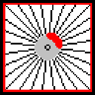
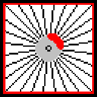
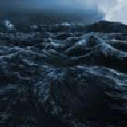
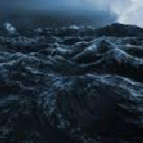
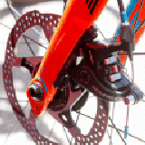
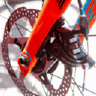

Nefarious Ltd
Nefarious LtdNefarious Ltd - Home
Welcome To Nefarious Ltd.
 Welcome to Nefarious Limited, the official home of the Square Wheel, we are specialist's in the field of manufacturing 'Square Wheels'. They're not guaranteed to make you any go faster (if at all), than a normal round wheel, but you don't half have a bumpy ride!
Please continue reading, to find out morre about our unique product. Or jump straight to the products range (by clicking on 'products range').
 Welcome to Nefarious Limited, the official home of the Square Wheel, we are specialist's in the field of manufacturing 'Square Wheels'. They're not guaranteed to make you any go faster (if at all), than a normal round wheel, but you don't half have a bumpy ride!
Please continue reading, to find out morre about our unique product. Or jump straight to the products range (by clicking on 'products range').
Feel As If You Are At Sea For Free!
 Riding your bycycle with our patent Square Wheels will make you feel as if you are out on the sevens seas. Luckily, for you, you won't be getting any spray of the sea or ocean, but you will indeed feel as though you are on a choppy piece of water, just like a fairgound ride designed to turn to your insides out!.
Just like being at the fair, but it's for FREE!
 Riding your bycycle with our patent Square Wheels will make you feel as if you are out on the sevens seas. Luckily, for you, you won't be getting any spray of the sea or ocean, but you will indeed feel as though you are on a choppy piece of water, just like a fairgound ride designed to turn to your insides out!.
Just like being at the fair, but it's for FREE!
Powerful Flashy Matching Disk Brakes!
 Since our wheels are uniquely square, you cannot use traditional rim brakes. Hence, our 'Square Wheels' are fitted with powerful matching coloured disk brakes. In fact!, the brakes are so powerful they will enable you to stop your bike on the very point of any one of the 'Sqaure Wheels'
Please Note: The matching coloured brakes are optional, at extra cost. Standard Black brakes are fitted by deafult.
 Since our wheels are uniquely square, you cannot use traditional rim brakes. Hence, our 'Square Wheels' are fitted with powerful matching coloured disk brakes. In fact!, the brakes are so powerful they will enable you to stop your bike on the very point of any one of the 'Sqaure Wheels'
Please Note: The matching coloured brakes are optional, at extra cost. Standard Black brakes are fitted by deafult.
No Quibble Money Back Guarantee!
Yes, it's true!. In fact we have so much faith in our 'Sqaure Wheels' that we offer a no quibble money back guarantee that if your brains are not throughly stirred up after riding on your bike with our trademark Square Wheels, we will offer to give you your money back!
Please Note: The No Quibble Money Back Guarantee is subject to terms and conditions, please review our terms and conditions of contract for full details).
Yes, it's true!. In fact we have so much faith in our 'Sqaure Wheels' that we offer a no quibble money back guarantee that if your brains are not throughly stirred up after riding on your bike with our trademark Square Wheels, we will offer to give you your money back!
Please Note: The No Quibble Money Back Guarantee is subject to terms and conditions, please review our terms and conditions of contract for full details).